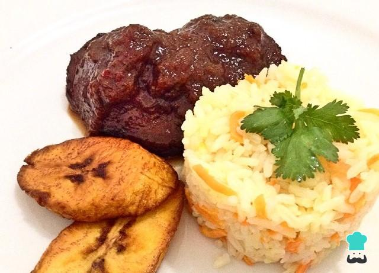

ROASTED BLACK

Description
Black roast is a typical Venezuelan food. The dish consists of a cylindrical-shaped cut of meat, extracted from the back of the beef (popularly called "round boy"); which is prepared with spices and paper. The papelón, together with the wine and the sweet chili, gives it a dark tone and a sweet flavor. Its origin was born in Caracas during the colonial era.
Ingredients
- round boy(cut of meat)
- onion
- peppers
- salt
- pepper
- cooking oil
- meat broth
- black soda
Instructions
- Flavor the meat with salt and pepper. Then we fry the entire piece in oil, browning on all sides. The idea is that the meat is slightly black.
- Separately, cut the onion into julienne strips and the peppers, without seeds or veins, into large pieces.
- Add the vegetables to the pot with the meat and let everything sauté together. Then add all the liquids, the soda and the meat broth. Cover and cook for about 90 minutes over low heat until the meat is completely tender. If all the liquid is consumed before time, you can add a little water or more broth.
- Check the seasoning and adjust with salt if necessary. Then take out the meat and cut it into slices. This black roast is served with white rice and banana slices.
Back